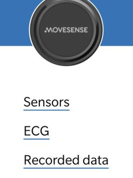
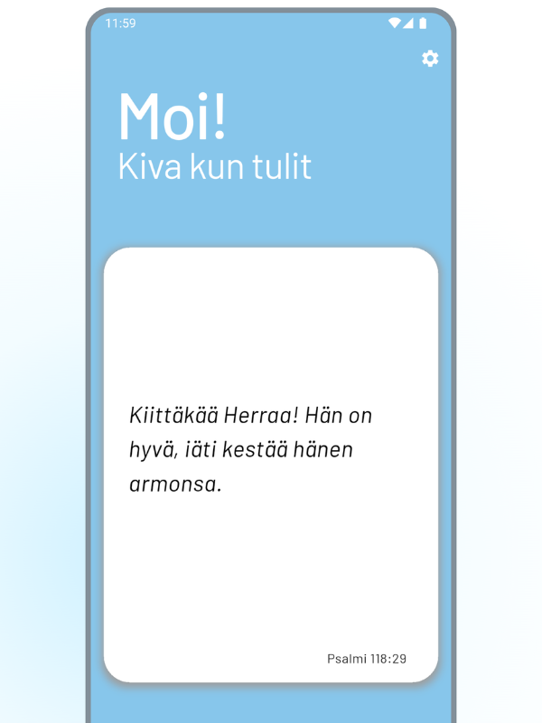
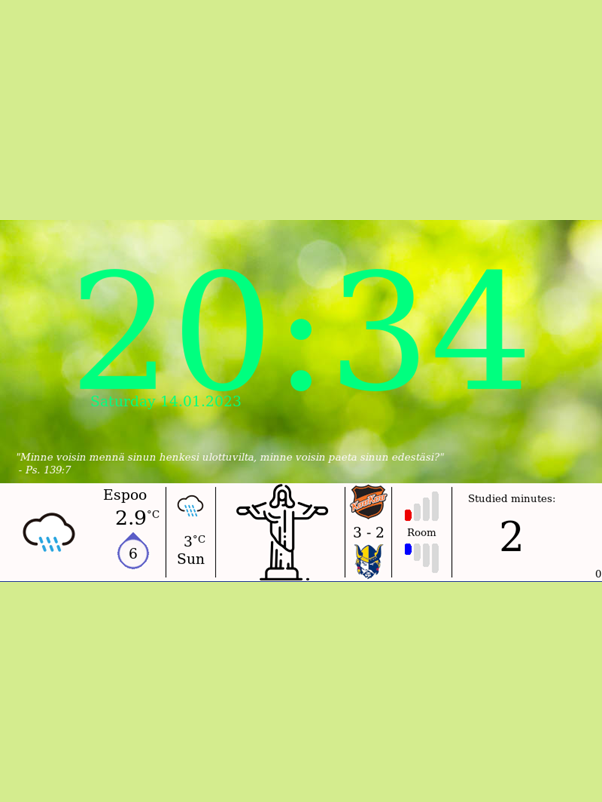
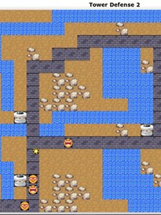
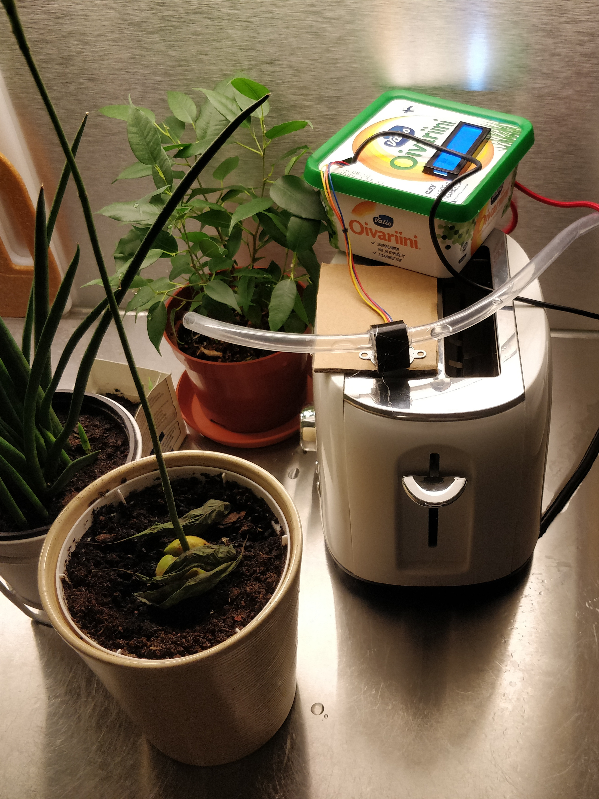

Hi, I am Ville Puuri
Embedded & Apps
I'm a 26-year-old recent Master of Science graduate with a focus on embedded systems and mobile applications. I'm passionate about creating innovative, user-friendly technology that improves people's lives. My diverse work experience and enthusiastic attitude have helped me develop a creative mindset—one that encourages bold thinking and fresh perspectives.
Growing up on a farm taught me valuable practical skills, and studying at Aalto University gave me the tools to turn my ideas into reality. As my skills have grown, I've built a wide variety of projects to meet real-world needs—something I find incredibly rewarding. Below, you'll find some of the projects I'm most proud of.
Projects
Android app for an ECG sensor
2023
In a project course, our team was tasked with creating an Android app for Suunto’s Movesense ECG sensor. I was responsible for designing the user interface, discovering nearby Bluetooth devices, and implementing CSV file export functionality.
- Android
- Java
- Git
- Group work
Precision Carton Counter

2022
An egg sorting machine had a recurring issue: sometimes it failed to place exactly 10 eggs into a carton. Since the root cause couldn’t be identified, I came up with the idea to build a system that would count the eggs in each carton and alert the user if something was wrong. The system runs on a Raspberry Pi and uses OpenCV for image processing.
- Raspberry Pi
- Python
- OpenCV
Prayer diary app
2025
I noticed that there were no prayer diary apps available on Google Play, so I decided to build and publish one myself. What started as a simple idea turned into a fairly large project, teaching me not only how to design an intuitive user experience, but also how to manage and structure a larger-scale software project.
- Flutter
- Firebase
- Google Play
Control panel
2021
I wanted to build a custom home control panel that would include a Pomodoro timer, clock, weather updates, and the latest results of my favorite hockey team, KooKoo. I used a Raspberry Pi with a touchscreen display to show all the information, and it quickly became a useful daily tool. My favorite feature is that whenever KooKoo scores a goal, the system triggers a light show with the LED lights in my home.
- Raspberry Pi
- Python
- User Interface
Tower defence game
2020
As part of a programming course, our team developed a Tower Defense game in C++. I was responsible for implementing the logic that controlled the movement of enemy units, ensuring they followed the correct paths and interacted with the environment as expected. The project helped me strengthen my understanding of game loops, object-oriented programming, and real-time updates in C++.
- C++
- Git
- Group work
Plant watering system
2022
While being away from my home for a couple of weeks, I needed a way to water my plants. There would have been easier ways to do it, but I wanted to try automating it. I challenged myself to use only one water pump to water all four plants with a stepper motor. It was not built to be a long-lasting solution, but it worked fantastically!
- Arduino
Skills
- Python
- C
- C++
- Flutter
- MATLAB
- Java
- VBA
- Raspberry Pi
- Oscilloscope
- 3D printing
- PLECS
- Arduino
- Git